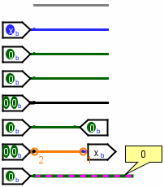

导线颜色
现在可以总结 Logisim 导线可能呈现的各种颜色。下面这个小电路一次展示了所有颜色。

-
灰色： 导线的位宽未知。这是因为导线没有连接到任何组件的输入或输出。（所有输入和输出都有确定的位宽。）
-
蓝色： 导线携带一位值，但没有任何组件向它驱动具体值。我们称此为浮空位；有些人称之为高阻值。在此例中，连接到导线的组件是一个三态引脚，因此它可以输出这种浮空值。
-
深绿色： 导线携带一位 0 值。
-
亮绿色： 导线携带一位 1 值。
-
黑色： 导线携带多位值。部分或全部位可能未指定。
-
红色： 导线携带错误值。这通常是因为门电路无法确定正确输出，可能原因是没有输入。也可能是因为两个组件试图向同一导线输出不同值；如上例所示，一个输入引脚向导线输出 0，另一个向同一导线输出 1，从而导致冲突。多位导线只要有任意一位为错误值，就会变为红色。
-
橙色： 连接到导线的组件在位宽上不一致。橙色导线实际上是断开的：它不会在组件之间传递值。这里，一个两位组件连接到了一个一位组件，因此二者不兼容。
-
绿-紫红色： 这种配色表示导线已被手形工具（
 ）选中。这样既可以辨认导线的路径，也会在小气泡中显示导线状态，便于在复杂电路图中跟踪连接。
）选中。这样既可以辨认导线的路径，也会在小气泡中显示导线状态，便于在复杂电路图中跟踪连接。
下一节： 自编号标签。